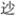

贺 新 郎
辛弃疾
赋 琵 琶
凤尾龙香拨① ，自开元、《霓裳曲》罢② ，几番风月？最苦浔阳江头客③ ，画舸亭亭待发④ 。记出塞、黄云堆雪⑤ 。马上离愁三万里⑥ ，望昭阳宫殿孤鸿没⑦ 。弦解语，恨难说⑧ 。 辽阳驿使音尘绝⑨ ，琐窗寒、轻拢慢捻⑩ ，泪珠盈睫。推手含情还却手⑪ ，一抹《梁州》哀彻⑫ 。千古事、云飞烟灭。贺老定场无消息⑬ ，想沉香亭北繁华歇⑭ 。弹到此，为呜咽。
【注释】
①“凤尾”句：拨，拨弦用具。《明皇杂录》：杨贵妃琵琶以龙香柏为拨，以逻

檀为槽，有金缕红纹，蹙成双凤。苏轼《宋叔达家听琵琶》诗：“数弦已品龙香拨，半面犹遮凤尾槽。” ②“自开元”句：白居易《新乐府·法曲》自注：“《霓裳羽衣曲》起于开元，盛于天宝也。” ③“最苦”句：白居易《琵琶行》：“浔阳江头夜送客。” ④画舸亭亭：承上指客船。郑文宝《柳枝词》：“亭亭画舸系寒潭。” ⑤“记出塞”句：欧阳修《明妃曲》：“不识黄云出塞路，岂知此声能断肠。” ⑥马上离愁：见前《贺新郎·别茂嘉十二弟》“马上琵琶”注。 ⑦昭阳宫殿：汉未央宫有昭阳殿，多用指后妃承恩处。 ⑧“弦解语”二句：夏承焘师曾引唐诗云：“诚知言语难传恨，不似琵琶道得真。” ⑨辽阳：指代征战地，沈佺期《独不见》：“十年征戍忆辽阳，白狼河北音书断。” ⑩轻拢慢捻：《琵琶行》：“轻拢慢捻抹复挑。”拢、捻、抹、挑，皆指法。 ⑪推手、却手：《释名》：“琵琶本于胡中，马上所鼓也。推前手曰琵，引却曰琶，故以为名。” ⑫《梁州》：琵琶曲。元稹《连昌宫词》：“逡巡大遍《梁州》彻，色色《龟兹》轰陆续。” ⑬贺老定场：贺怀智，唐开天间善弹琵琶者。定场，压场、压住阵脚的意思。《连昌宫词》：“贺老琵琶定场屋。” ⑭沉香亭：在唐兴庆宫图龙池东，玄宗与杨贵妃曾于此赏牡丹，命李白赋新词，其《清平调》云：“解释春风无限恨，沉香亭北倚栏杆。”【语译】
以凤尾纹饰槽，以龙香柏为拨，这琵琶从开元年间弹过《霓裳羽衣曲》后，经历了多少风月变迁啊！最苦的莫过于浔阳江头送客的人了，当明丽的画船将要出发之际，他在江上倾听了琵琶女的演奏。记得古时昭君出塞，黄云堆压在白雪上，马上的琵琶声寄托着远涉三万里外的离愁，她回望长安的昭阳宫殿，唯有孤飞的大雁渐渐消失在天边。纵然琵琶弦能代替讲话，可是心中的怨恨却难以诉说啊！
辽阳征戍地，那里的驿使不来，音讯全无。闺阁琐窗中的思妇，只感到寒意袭人。她轻轻地慢慢地拨弄着琵琶，眼睫毛上沾满了泪珠儿；含情脉脉地在弦上将手指推前又收回，弹一支《梁州》曲，从头到尾全都是哀音。千年历史上的事情，都已云飞烟灭了。开天盛世时琵琶高手贺怀智老先生出来压场的事情再也听不到了，想那明皇与贵妃赏牡丹、李白作新词于沉香亭北的繁华景象也不再有了。弹到这儿，就不免为之呜咽起来。
【赏析】
对这首“赋琵琶”的《贺新郎》词，梁启超有几句风趣的评语：“琵琶故事，网罗胪列，杂乱无章，殆如一团野草。唯其大气足以包举之，故不觉粗率。非其人勿学步也。”（梁令娴《艺蘅馆词选》引）的确，词中用事或用为出处的就有杨贵妃事、《琵琶行》、王昭君事、《独不见》、《连昌宫词》、《清平调》等等，初看真如野草一团，杂乱无章。但细细玩味，知非任意作典故堆垛，也非只凭大气（非凡的才情）包举，而是在使事用典中，处处寄托自身的遭遇感受和对国事兴衰的感慨。
词的起结，用的都是唐玄宗与杨贵妃事。贵妃善琵琶，《霓裳羽衣曲》又与明皇宫廷逸乐和贵妃本人密不可分。这就引出“自开元……几番风月”的话来。毫无疑问，这里是借“开天盛世”的风月繁华，追念被金国灭亡前的北宋。到结尾时，又用“贺老定场”二句来伤悼玄宗时代繁荣景象的消歇。贺怀智是开天时宫廷中的琵琶高手，元稹《连昌宫词》曾以“夜半月高弦索鸣，贺老琵琶定场屋”的热闹场面，写当年宫中乐事，但到写诗的半个世纪后已是“夜夜狐狸上门屋”的荒凉景象了。天宝初，沉香亭遍植牡丹，玄宗与贵妃前往赏花，命李龟年召李白作新词，奏乐歌唱以助兴，为一时之盛事，这也早无影无踪了。作者借唐说宋，为现实感受而发，所以才会有“弹到此，为呜咽”的特别激动的情绪表现。
那么，其他故事呢？“浔阳江头”的白居易微官在身而自称“天涯沦落人”，长期被弃置山林，过着闲居生活的辛弃疾，若藉以自况，内心之“苦”，则犹有过之。昭君出塞之怨恨，在唐宋人看来，总是远离故国，终老异邦，即杜诗所谓“千载琵琶作胡语，分明怨恨曲中论”（《怀古迹》）是也。词中“离愁三万里”和“望昭阳宫殿”云云，正是这种汉民族感情的寄托。被远远掳往胡地的徽、钦二帝的怨恨，可借史事以联想；在北地沦为金国遗民的父老乡亲们南望王师的感情，也可与之相通。只是“辽阳驿使音尘绝”一事的用法，恐已非唐诗中思妇盼“良人罢远征”，早日归家团聚的本意，而是反其意而用，说关塞无烽燧，朝廷不思北伐。故周济以为“辽阳”数句是“刺晏安江沱，不复北望”（《宋四家词选》）。果真如此，则“泪珠盈睫”和一曲哀音也都该脱开表面的儿女之情而认为是一种“山川满目泪沾衣”的忧国之情的曲折表现。此词用事虽多而不碍抒情，全篇感情仍激越酣畅，很能体现辛词的艺术特色。